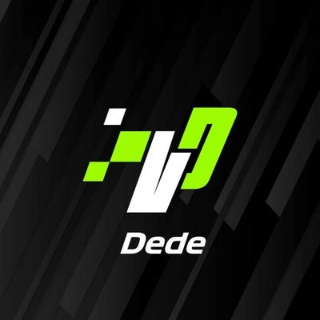
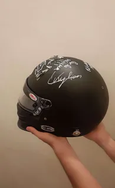

Présentation
Lucas Passet
Passet
19 ans
1ère année de BUT informatique
Lucas Passet
Passet
19 ans
1ère année de BUT informatique
Je suis actuellement licencié depuis 2018 dans une association de tennis de table ou je suis impliqué dans des manifestations sportives comme des salons ou des lotos, je suis aussi compétiteur et je joue à une échelle régionale depuis 2 ans dans une équipe de 4 personnes ou nous participons à des matchs par équipe les week-end, le tennis de table est un sport qui à l’apparence simple se relève très complexe. J’ai pu en être témoin grâce à une formation de juge arbitre de niveau 1 que j’ai réalisé dans le courant du moi de mai ou j’ai pu m’occuper de la gestion d’un match entre 2 équipes d’un niveau régional, avec gestion du temps d’échauffement et de coaching, ainsi que de la saisie des résultats.
J’aimerais bien poursuivre en passant mon diplôme de Juge arbitre de niveau 2 et 3 qui me permettrons de gérer un tour de critérium ( compétition individuelle contenant 16 joueurs repartis en 4 poules) puis de gérer un tournoi régional ( une centaine de compétiteurs repartis dans un ou des tableaux suivant leur niveaux )
Depuis le Covid 19 j’ai commencé dans le monde du simracing, cela consiste à conduire grâce à un matériel de conduite dans des conditions poches de la réalité, j’ai participé à de nombreuses compétitions qui m’ont permises d’intégrer une des meilleures équipes françaises à l’heure actuelle . Pendant cette phrase j’ai pu remporter 2 grandes courses, premièrement une course en partenariat avec Nissan qui m’a permis de remporter un stage de pilotage, un casque signé ainsi qu’une combinaison de pilote.
La deuxième étant sur un événement semblable aux championnat de France sur une endurance de 24h ou toutes les meilleures équipes de France avec quelques équipes étrangères étant présentes, ou nous avons remporter la course et ou j’ai réalisé un hat trick ( meilleur temps des préqualifications + meilleur tour en course + victoire ) Le but pour ma part et maintenant de contribuer à l’équipe sur la création d’événements ainsi que sur le plan de la communication
Depuis cette année j’ai commencé, avec mon père à m’intéresser et à faire des courses de karting, nous avons donc commencé par des petites course de 2h à 4 afin de comprendre le rôle d’une stratégie et de l’endurance nécessaire pour réaliser des futures endurance plus logues